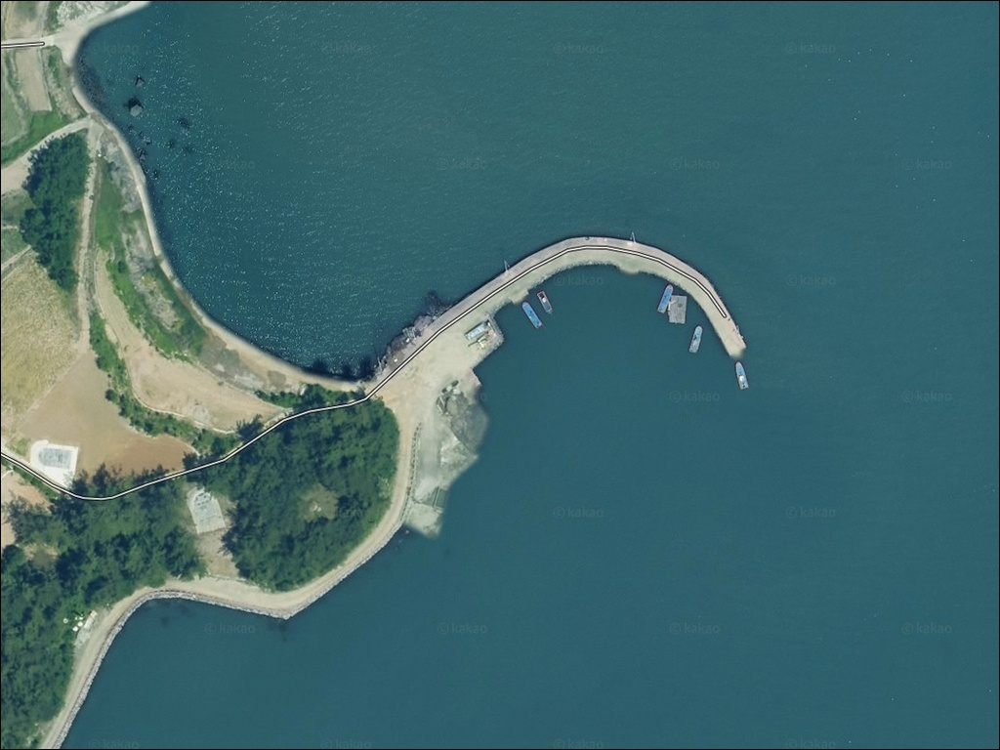
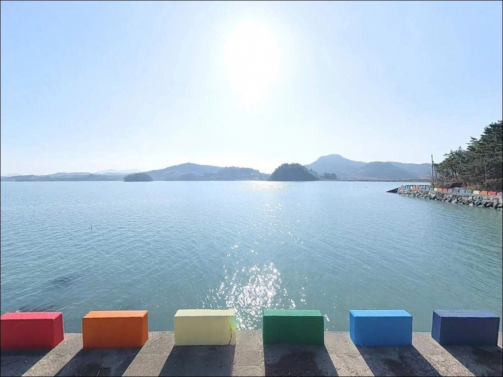
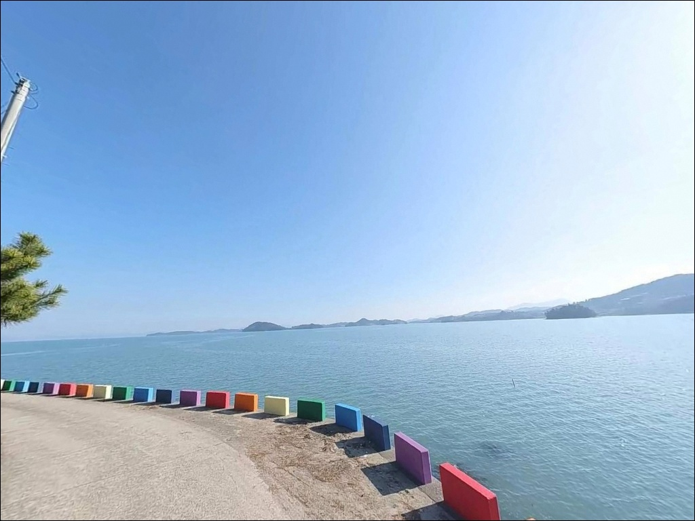
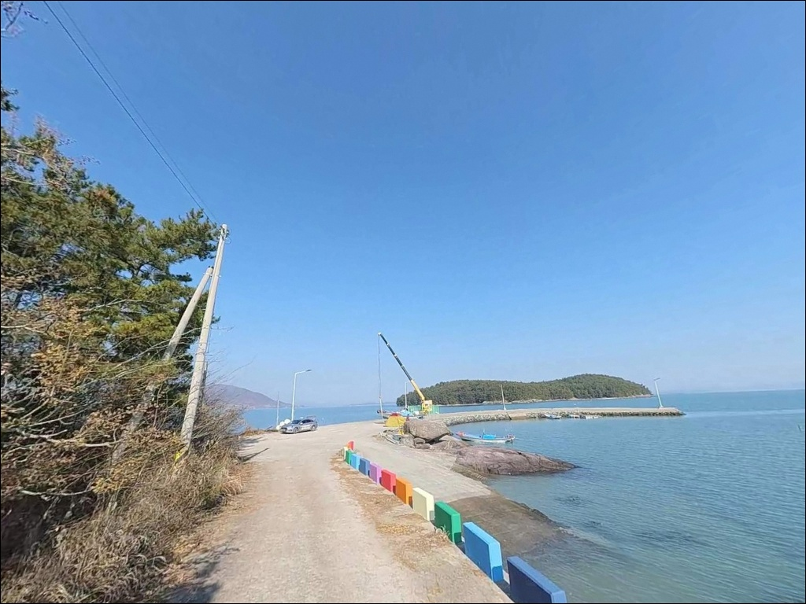
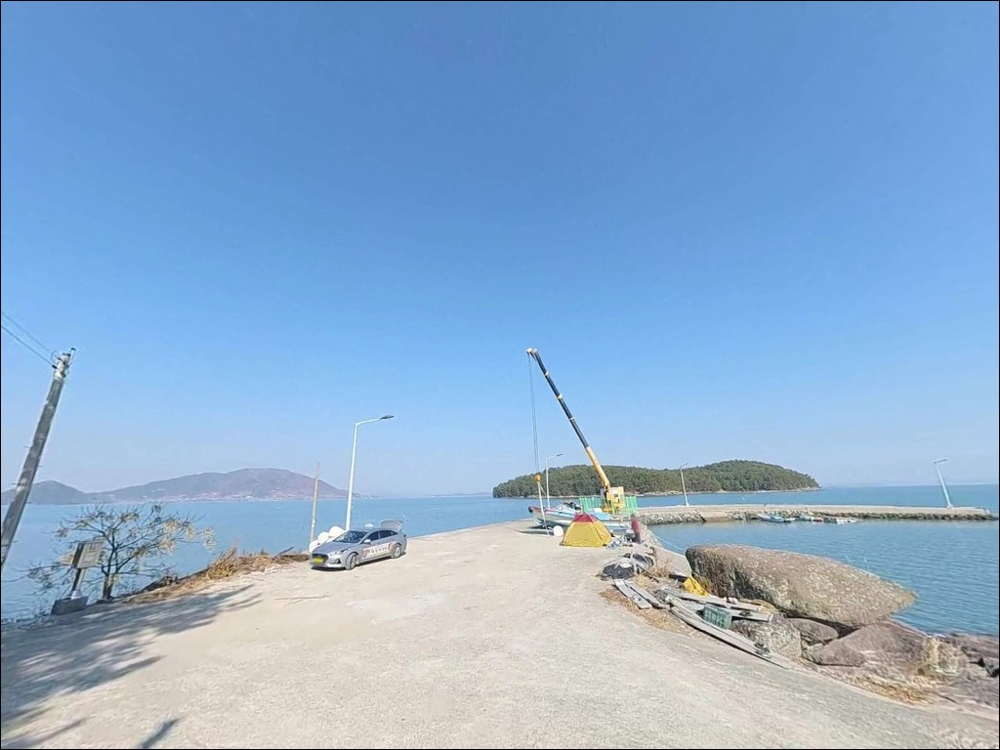
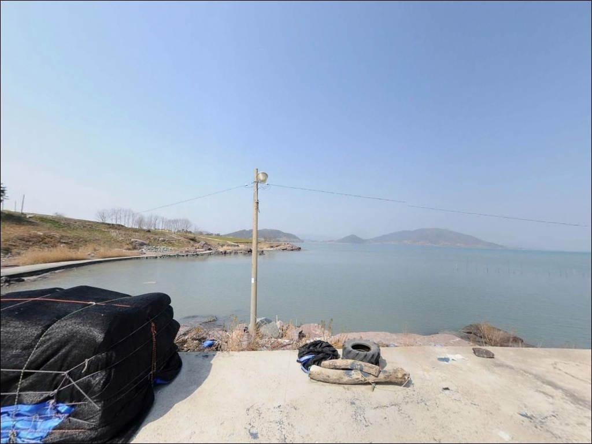
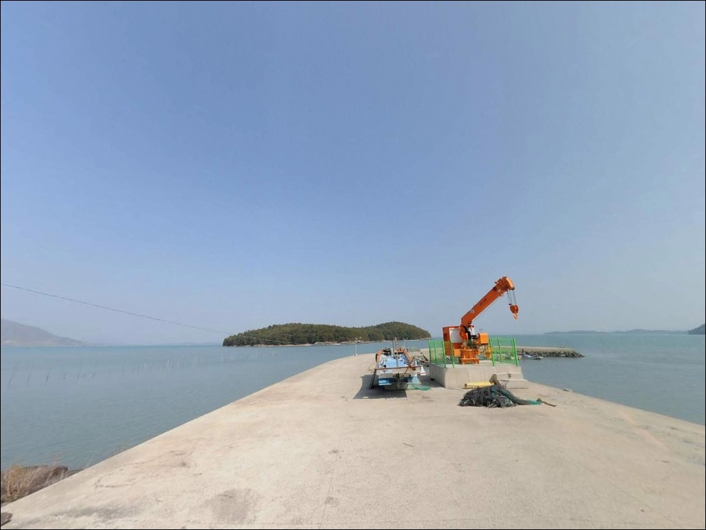
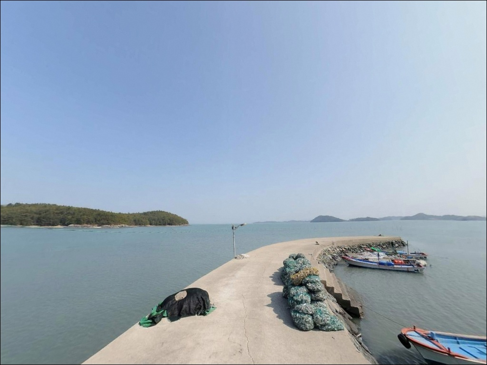
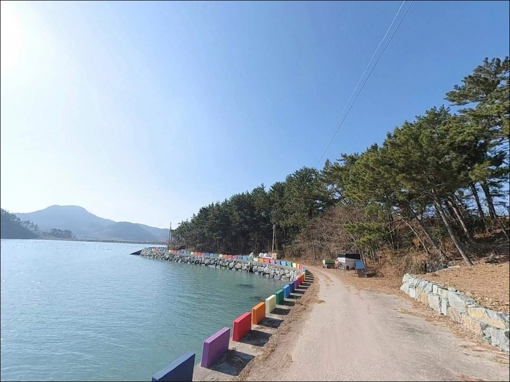

간조 때 뻘밭 되는 고흥 오도2방조제, 원투낚시 만조 전후 2시간 유효 수심
이 페이지에는 광고(제휴 링크 포함)가 있으며, 광고 링크를 통해 구매하면 운영자가 판매 수익 또는 수수료를 받을 수 있습니다. 포인트 사진: 카카오맵 스카이뷰·로드뷰. 이 페이지의 지도·사진 이미지는 카카오맵의 실제 서비스 이미지와 다를 수 있습니다.


포인트 안내
오도2방조제
전남 고흥군 과역면 연등리 1444
물때 확인 없이 오도2방조제에 도착하면
낚시 자리 자체가 갯벌로 바뀌어 있습니다.
여자만 내만은 조차가 3~4m에 달해
간조 때는 방조제 앞이 온통 뻘밭으로 드러나는 구조입니다.
만조 전후 2~3시간을 계산하고 출발하지 않으면
도착해도 낚싯대를 펼 수 없습니다.
과역면 서쪽, 여자만 연안에 조성된 오도2방조제는
오도지구 간척사업으로 만들어진 방조제 도로형 구조물입니다.
한쪽은 간척지 논이, 다른 한쪽은 여자만 수역이 맞닿아
원투낚시 중심의 한적한 단독 포인트로 자리잡고 있습니다.
이 글은 오도2방조제의 진입 여건,
물때 판단 기준, 낚시 스타일별 공략 조건에 집중합니다.
조황 단정이나 특정 어종 보장은
이 글의 범위에 포함되지 않습니다.

1. 진입 동선과 포인트 접근성
오도2방조제는 과역면 소재지에서
사반길 방향 농로를 따라 진입하는 구조입니다.
방조제 상면은 차량 통행이 가능한
도로형으로 포장되어 있으며,
승용차 기준 진입에 큰 어려움은 없습니다.
다만 방조제 도입부까지 이어지는 농로 구간은
폭이 넓지 않은 편이라
캠핑카나 대형 SUV는 사전에 경로를 확인하는 편이 좋습니다.
방조제 상면은 양방향 교행이 가능한 폭을 유지하고 있으며,
구간마다 농기계 회차용 공터가 분포합니다.
방조제 양 끝단 마을 연결부에서도
삼거리·교차로 형태로 회차 여유 공간이 확보됩니다.
주차는 방조제 진입부 공터와
도로 가장자리 넓어진 구간을 주로 활용합니다.
인근 농경지는 농기계 통행이 빈번한 구간입니다.
도로 또는 농로를 부분 점유하는 주차는
농민·어민의 통행에 지장을 줄 수 있으니
바짝 붙여 주차하는 것이 기본 매너입니다.

2. 차박 환경과 야간 체류 여건
방조제 진입부 공터는 물리적으로 차박이 가능한 평탄 공간입니다.
민가 밀집도가 낮고 주변에 논과 갯벌이 펼쳐지는 구조라
야간 프라이버시는 비교적 양호한 편입니다.
외해가 아닌 내만 위치라 파도 소음과 너울 영향은 거의 없고,
전반적으로 조용한 환경입니다.
다만 방조제 전 구간에 가로등이 없어
야간에는 완전 암흑 상태가 됩니다.
개인 랜턴과 헤드랜턴은 필수이며,
여름철에는 갯벌 특유의 갯냄새와
모기·벌레 대비를 충분히 준비해야 합니다.
방조제 개활지 특성상 바람 영향을 직접 받는 구조이므로
바람 방향과 세기는 체류 전 반드시 확인합니다.


3. 주변 편의시설 및 인프라 현황
오도2방조제 현장에는 편의시설이 없습니다.
방조제 자체가 농업용 간척지의 배수·교통 기능을 담당하는 구조물이므로
낚시객을 위한 시설이 별도로 갖춰져 있지 않습니다.
완전 자급 체제로 진입하는 것이 현실적인 준비 방식입니다.
식수, 미끼, 얼음, 간식을 출발 전에 모두 준비해야 합니다.
과역면 소재지가 방조제에서 차량 기준 5분 이내 거리에 있습니다.
면 소재지 방향에 소규모 마트와 식당이 집중되어 있어
부족한 소품이 생기면 이 동선을 활용합니다.
응급 상황 발생 시 고흥읍까지 10~15km 거리이며
고흥군보건의료원이 가장 가까운 의료 시설입니다.
연료도 사전에 채워두는 편이 안전합니다.

4. 방문 전 반드시 챙겨야 할 준비사항
오도2방조제에서 가장 먼저 확인할 것은 물때입니다.
여자만은 조차가 크고 내만 특성이 강해
간조 시에는 방조제 앞 갯벌이 넓게 드러납니다.
만조 기준 전후 2~3시간이 낚시 가능한 창이며,
이 시간대를 벗어나면 채비를 던져도 바닥이 보입니다.
바다타임에서 과역면 기준 물때를 사전에 확인하고
도착 시각을 역산해 출발 시간을 맞추는 것이 기본 전략입니다.
뻘 기반 바닥에서는 채비가 묻히는 특성이 있어
봉돌 형태 선택이 중요합니다.
납작한 납 접시형이나 삼각봉돌이
이 지형에서 밑걸림을 줄이는 데 유리합니다.
미끼는 청갯지렁이·홍갯지렁이·개불 계열이
이 일대 원투낚시 현장에서 주로 쓰입니다.
여분 채비는 넉넉하게 챙기는 편이 좋습니다.
방조제 경사면과 석축 구간은 이끼나 해조류로 인해
미끄러울 수 있습니다.
밑창이 두꺼운 장화 착용을 권장하며,
야간 단독 출조 시에는 구명조끼 착용이 기본 안전 수칙입니다.
들물 시 물이 차오르는 속도가 빠를 수 있으므로
장비와 짐 위치를 수시로 확인해야 합니다.

5. 오도2방조제 지형이 만드는 낚시 여건
오도2방조제는 오도지구 간척사업으로 조성된
선형 제방 구조물입니다.
방조제 한쪽은 간척 논과 배수로가 이어지고,
반대편은 여자만 수역이 직접 닿는 구조입니다.
배수갑문 주변과 수로 합수부에
수심 경계가 뚜렷이 형성되는 지점이 이 포인트의 핵심입니다.
바닥 기질은 뻘과 모래가 혼합된 연질 저질입니다.
밑걸림은 적지만 채비가 뻘에 가라앉는 특성이 있어
봉돌 선택이 조과 차이를 만듭니다.
여자만 내만 특성상 조차가 크고
간조·만조 전환 시 배수 유량 변화에 따라
방조제 주변 수로에서 조류 변화가 분명하게 나타납니다.
직선 구간보다 굴곡부·합수부·배수갑문 인근이
물이 움직이는 유리한 자리입니다.
이 일대 해역에서 기대해 볼 수 있는 어종은
숭어, 보구치, 붕장어, 감성돔 소씨알, 낙지,
도다리, 양태, 갑오징어 등입니다.
계절에 따라 활성도 차이가 크며,
봄은 숭어와 갑오징어, 여름~가을은 보구치·붕장어·감성돔,
겨울에는 조황이 급감하는 패턴을 보입니다.
최신 조황은 출조 전 고흥 과역면 조황으로 검색해
반드시 확인하고 이동하는 편이 좋습니다.


6. 포인트 지형에 맞는 낚시 스타일
이 포인트의 주력 방식은 원투낚시입니다.
방조제 상면에서 여자만 방향으로
원거리 캐스팅하는 구성이 기본이며,
뻘 기반 바닥을 감안해 납작한 접시봉돌이나
삼각봉돌을 선택하는 것이 효율적입니다.
만조 전후 2~3시간에 집중하며,
바닥 생활 어종인 붕장어·도다리·양태를
기대해 볼 수 있는 구조입니다.
루어낚시는 봄철 숭어를 노리는 방식으로 활용됩니다.
여자만 내만은 숭어 회유 밀도가 높으며,
봄(3~5월) 숭어 낚시는 과역면 일대 전통 어법 중 하나입니다.
소형 스푼이나 루어미노우를 활용한
표층 공략이 수심이 얕은 이 지형에 잘 맞습니다.
만조 전후 조류가 움직이는 시간대를 노리면
반응이 올라오는 편입니다.
찌낚시는 만조 전후 수심이 충분히 확보된 시간대에 한해 가능합니다.
반유동 채비로 중층을 노리는 방식이며,
배수갑문 인근이나 수로 합수부 주변이
이 방식에서 조류 흐름을 살리기 유리한 자리입니다.
감성돔 소씨알과 숭어를 대상으로 운용합니다.

7. 대안 포인트와 플랜 B 동선
오도2방조제 물때가 맞지 않거나
조황이 기대에 못 미칠 때는
오도1방조제가 첫 번째 대안입니다.
연등리와 남양면 신흥리를 잇는 1,167m 길이의 방조제로
오도2방조제와 지형 패턴이 유사하며
인접 거리라 이동 부담이 없습니다.
수심과 낚시 여건을 더 안정적으로 확보하고 싶다면
고흥만 방조제로 이동하는 동선이 유효합니다.
오도2방조제에서 15~20km 거리로
방조제 양측 수역과 수변공원 구간을 갖추고 있습니다.
원투·루어·생활낚시가 모두 가능한 구조이며
낚시 후기가 다수 축적된 포인트입니다.
차박 여건을 개선하고 싶다면
점암면 남열우주해수욕장이 대안입니다.
정식 주차장과 편의시설이 갖춰진 대형 차박지로
오도2방조제보다 안정적인 체류 환경을 제공합니다.
낚시와 차박을 병행할 예정이라면
남열우주해수욕장을 기점으로 삼고
오도2방조제를 반나절 탐색 포인트로 활용하는 동선도 효율적입니다.

물때 한 번 맞추면
조용하게 원투 즐기기 좋은 방조제입니다
여자만을 마주하는 조용한 간척지 방조제에서
원투낚시를 즐기고 싶은 낚시인이라면
오도2방조제는 잘 맞는 구조입니다.
온라인에 정보가 거의 없어
직접 발품을 팔아야 하는 탐색형 포인트이지만,
만조 타이밍을 맞춰 들어오면
한적하게 자리를 독점할 수 있는 장점이 있습니다.
반면 물때 계산 없이 찾아가거나
사전 준비 없이 방조제에 도착하면
낚시도, 차박도 여의치 않은 상황을 마주할 수 있습니다.
물때 확인, 채비 사전 준비, 자급 체제 완비.
이 세 가지를 갖추고 간다면
조용하고 기억에 남는 출조가 될 수 있는 곳입니다.
편의시설 없는 내만 방조제에서
썰물과 밀물 사이를 기다리며 조용히 낚싯대를 드리우는 시간,
그 한적함이 이 포인트의 진짜 매력입니다.